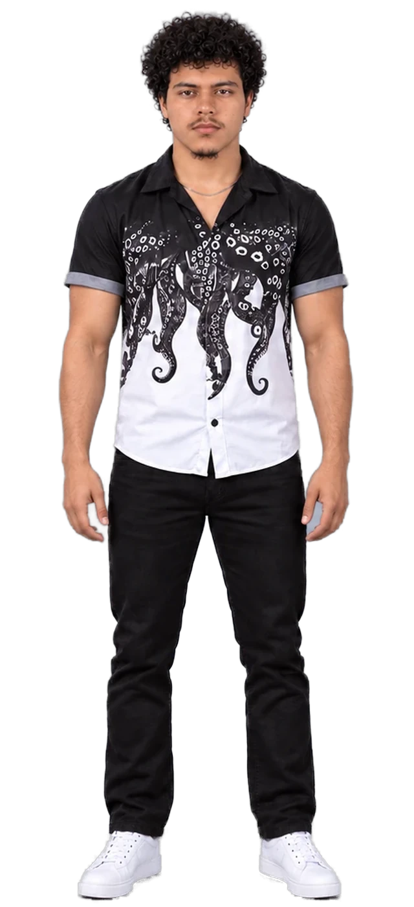

Sobre mim
Gustavo Steferson de Souza Rocha
Aberto a estágio, trainee e nível inicial
Técnico em Eletrotécnica — formado
Estudante de ADS
Estudante de Análise e Desenvolvimento de Sistemas, com formação técnica em Eletrotécnica e experiência em operações, negociação e organização de dados. Tenho perfil analítico, organizado e facilidade para aprender — e busco minha primeira oportunidade na área de Desenvolvimento Web.
- Local
- Jaraguá, São Paulo — SP
- Atualmente
- Supervisor de Transporte · Seara
- Cursando
- ADS · Faculdade Flamingo
- Formado
- Eletrotécnica · ETEC Jaraguá

Arraste para girar
Personagem de Gustavo, com camisa preta e branca estampada com tentáculos, calça jeans preta e tênis brancos, girando 360° sobre uma plataforma elevatória.